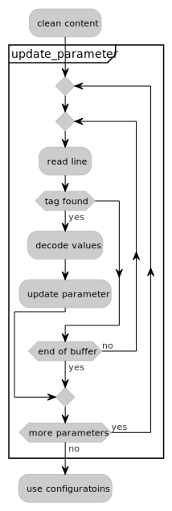
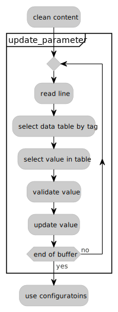

The evolution of a configuration system for UAV actuator monitoring: a refactoring case study
- Research Assistant at Chair of Aircraft Design, TUM
- UAV systems, flight testing
- Bare-metal applications with C
- C++ Applications, test automatization
- Reading & making coffee
- My journey to modern C++
Chair of Aircraft Design, TUM, Prof. Mirko Hornung
- Research in aircraft design releated topics
- Aircraft design tool development - UNICADO link
- Design, build, retrofit and fly different UAV’s
- Custom sensors and monitoring systems
Content
- System
- Configuration file — Baseline
- Configuration file — Iterative approach
- Configuration file — Database approach
- Take aways
The System — Actuator Control and Monitoring Unit
The System — Test UAV

Baseline
Baseline
v1.1 — main.cpp
// Configure sensors
SysRuntime Runtime_Sensor("time_ms");
AS5600 RPS_Sensor{&ext_sensors, 0x36<<1, "rps_raw"};
//AS5600 RPS_Sensor{&ext_sensors, 0x4A<<1, "rps_raw"};
Analog servo_current_sensor(CURR_SENS_PIN, 10 * (1.5 + 3.9) / 3.9 , "current", 1, 0.360);
Analog voltage_sensor(VOLT_SENSE_PIN, 16.2/6.2, "voltage");
Analog int_temp_sensor(ADC_TEMP, 1, "internal_temperature");
//LTC2305 ltc2305(&ext_sensors, 1, "ltc2305_ch1", LTC2305_I2C_ADDRESS_1);
LTC2305 ltc2305(&ext_sensors, 1, "ltc2305_ch1", LTC2305_I2C_ADDRESS_9);
int main(){
LogManager activity_log(sensor_list, &sd_card_fs, 5ms);
}Iterative approach
Proof of concept
v1.3-23-g5bd85fa — main.cpp
SystemConfig sysConfig{&sdWrapper, "/sd/config.txt"};
#warning("Refactor needed here!");
auto normalBlinkTime{500};
if (SystemConfig::State::OK == sysConfig.BufferFileContent()) {
sysConfig.CleanContent();
normalBlinkTime = sysConfig.readValueOf("StatusOKBlink");
}
std::chrono::milliseconds temp{normalBlinkTime};
statusRGBLed.set(Color::red, 0);
while (true) {
statusRGBLed.toggle(Color::green);
ThisThread::sleep_for(temp);
}
}The configuration file
v1.3-49-ge5e37b4 – config.txt
#non empty file
#And an other non-epyt line
#
SamplingTime, 5000, us
StatusOKBlink, 500, ms
# Fake Current sensor, Should change to proper values
CurrentSensor,Fake, 10, 1, 0.5, 3.3
# Fake voltage sensor, change is
VoltageSensor,FakeV, 10, 1, 0.5, 3.3
# Fake Internal Sensor
InternalTemp,FakeTemp, 10, 1, 0.5, 3.3
#newcommenthereGeneralization
v1.3-49-ge5e37b4 — main.cpp
if (SystemConfig::State::OK == configFileState) {
// If there is no config file present, just run along!
sysConfig.CleanContent();
defaults.status.set_blink_time(
sysConfig.readValueOf(ConfigFileKeys::blink_time));
...
defaults.current_sensor =
sysConfig.readInAnalogSensor(ConfigFileKeys::current_sensor);
}
Analog servo_current_sensor(CURR_SENS_PIN, defaults.current_sensor.gain,
defaults.current_sensor.name.c_str(), 1,
defaults.current_sensor.offset);
while (true) {
ThisThread::sleep_for(defaults.status.blink_time);
}
}Iterative approach — workflow
Last version
v1.11-200-g2cfe45b — main.cpp
int main() {
load_configurations(&sdWrapper, &sd_lock, defaults);
init_sensors(defaults, sensor_list);
while (true) {
ThisThread::sleep_for(defaults.usb_data_stream_interval);
if (defaults.feature_flags.data_stream_enabled())
usb_protokol::req::sensor_data(defaults.feature_flags, usb,
sensor_collection);
}
}Last version
v1.11-200-g2cfe45b — main.cpp
Last version
v1.11-200-g2cfe45b – ./libs/sys_config.cpp
void acmu::configure_system(const SystemConfig &sysConfig,
acmu::Defaults &defaults, acmu::USB &_usb) {
usign anmespace acmu::sysconfig_details;
update_global_sampling_time(sysConfig, defaults);
update_logger_sample_time(sysConfig, defaults);
update_blinktime(sysConfig, defaults);
update_current_sensor_parameters(sysConfig);
update_voltage_sensor_parameters(sysConfig);
...
update_usb_data_stream_interval(sysConfig, defaults);
update_usb_data_stream(sysConfig, defaults.feature_flags);
}Last version
v1.11-200-g2cfe45b — config.txt
SamplingTime, 5000, us
DatalogSampleTime, 5, ms
# Key,name, R1, R2, offset, reference voltage
# General current sensor parameters, validated with ACMUv1000
CurrentSensor,current_mA, 1.5, 3.9, 0.420, 3.33
ServoPWM, 20000, 1000, 2000, 1500
EXT, RPS_Servo, servo_pos, 54, 1.0, true
EnableServo, true
EnableDataLog, true
DataLogBuffer, 12500
EnableRPSInstall, false
EnableForceRestart, false
EnableUSB, false
EnableLogfileNameUpdate, false
LogfileNameUpdateInterval, 1200, [sec]
EnableVoltageSensorBuffer, true
VoltageSensorBufferSize, 10
EnableServoCurrentBuffer, trueLast version — problems
- Code change
- Boilerplate and copy-pasta for new values
- Many steps and repetitions
- No compiler support to enforce correct change
- WatchDogy.pat()
- Many run-time problems during development
- Only manual configuration file change
- Configuration schema reflects domain
Database approach
Design changes
- USB functionalities are avaiable
- FW update, data streaming and feature flags
- Test UAV retrofitting is ready
- Multiple measurement point with variable hardware setup
- Configuration approach
- Configuration file generation
- Simple key & value pairs, value based data tables
- Templates and function overloads
- Compiler support to enforce each key is used
- Minimal modification to add new parameters
Data tables
Data tables
v1.12-58-g080c673 — ./inc/config_handler_types.h
enum class Keys : uint8_t {
blink_time = type_limits::min_num_of_keys,
buffer_size,
sampling_time,
not_used // keep this as the last value for statis boundary check
};
struct conf_value {
Keys key{Keys::not_used};
uint32_t current{};
uint32_t def{};
uint32_t min{};
uint32_t max{};
std::string tag{};
};
// inc/config_handler.h
namespace consts {
constexpr uint8_t num_of_keys{13};
}
using conf_values =
std::array<acmu::config::conf_value, consts::num_of_keys>;
static_assert(acmu::config::consts::num_of_keys <=
acmu::config::type_limits::max_num_of_keys);
static_assert((acmu::config::type_limits::max_num_of_keys +
acmu::config::type_limits::max_num_of_flags +
acmu::config::type_limits::max_num_of_floats +
acmu::config::type_limits::max_num_of_names) <= UINT8_MAX);Configuration change
v1.12-58-g080c673 — main.cpp
acmu::config::Handler new_conf{&defaults};
{
FileHandler sysconfig_file{acmu::constants::config_file_path,
&sdWrapper, &sd_lock};
auto config_content = sysconfig_file.read_cfile();
new_conf.update(config_content);
std::stringstream stream{acmu::config::Handler::get_all_config()};
for (std::string line; std::getline(stream, line);)
systemlog.append(line);
}
init_sensors(defaults, sensor_list);
while(true) { }Configuration change — via string
v1.12-58-g080c673 — ./src/config_handler.cpp
void acmu::config::Handler::update(const std::string str) {
std::string line{};
std::stringstream stream{};
stream << str;
while (std::getline(stream, line)) {
// identifying *tag* and *value* from *line*
const auto key = key_from<Keys>(config_ints, tag);
if (Keys::not_used != key) {
const auto result = static_cast<uint32_t>(std::stol(value));
change(key, result);
}
...
}
}Configuration change
v1.12-58-g080c673 — ./src/config_handler.cpp
void acmu::config::Handler::change(const acmu::config::Floats key, const float value) {
void acmu::config::Handler::change(const acmu::config::Names key, const std::string &value) {
void acmu::config::Handler::change(const acmu::config::Flags key, bool value) {
void acmu::config::Handler::change(const acmu::config::Keys key, uint32_t value) {
auto *conf = std::find_if(config_ints.begin(), config_ints.end(),
[key](auto conf) { return key == conf.key; });
if (acmu::config::boundary_check(conf, value))
conf->current = value;
change_impl(key, get_config_value<uint32_t>(key));
}
void acmu::config::Handler::change_impl(const acmu::config::Keys key,
uint32_t value) {
switch (key) {
case Keys::blink_time:
defs->status.set_blink_time(value);
break;
...
case Keys::not_used:
break;
}
}Parameter update — via USB
v1.12-58-g080c673 — ./src/usb_protokol.cpp
Parameter request
v1.12-58-g080c673 — ./src/config_handler.cpp
auto acmu::config::Handler::get_config(const acmu::config::Keys key) const -> conf_value {}
auto acmu::config::Handler::get_config(const acmu::config::Flags key) const -> conf_flag {}
auto acmu::config::Handler::get_config(const acmu::config::Names key) const -> conf_names {}
auto acmu::config::Handler::get_config(const acmu::config::Floats key) const -> conf_floats {
return get_config_impl<conf_floats_arr, conf_floats>(
acmu::config::Handler::config_floats, key);
}
template <typename CONFS, typename CONF, typename KEY>
auto acmu::config::Handler::get_config_impl(const CONFS &confs,
const KEY key) const -> CONF {
return *std::find_if(confs.begin(), confs.end(),
[key](const auto conf) { return key == conf.key; });
}Database approach — workflow
Workflow comparison
Take aways
Comparison
| module | v1.11-200 | v1.12-58 | diff |
|---|---|---|---|
| Sys config | 7k | 0 | -7k |
| Config h | 0 | 4.2k | +4.2k |
| Config h. arrays | 0 | 1k | +1k* |
| globals | 3k | 1.4k | -1.6k |
| libc++ | 120.2k | 118.9k | -2.3k |
| sum | 130.2k | 125.5k | -5.7k |
Comparison
| module | v1.11-200 | v1.12-58 | diff |
|---|---|---|---|
| Sys config | 7k | 0 | -7k |
| Config h | 0 | 4.2k | +4.2k |
| Config h. arrays | 0 | 1k | +1k* |
| globals | 3k | 1.4k | -1.6k |
| libc++ | 120.2k | 118.9k | -2.3k |
| sum | 130.2k | 125.5k | -5.7k |
| runtime | 1.1ms | 5.4ms | +4.3ms |
Take aways
- Data tables by type vs. all data in one table
- less conditionals and branching
- generalized workflow is easier
- Templates, overaloads, algorithms, lambads
- one enables and encourages the other
- less code to write
- 120-150bytes increase per std::find_if()
- Size vs. speed vs. maintainability
- Compiler support via static_asserts and -Werror=switch
- CppCheck & clang-tidy
- automatic refactorings with clang-tidy
References
- Data-Oriented Design, R. Fabian link
- Refactoring, Martin Fowler link
- C++ Software Design, Klaus Iglberger link
- Hands-On Design Patterns with C++, Fedor G. Pikus, link
- Test-Driven Development for Embedded C, James W. Grenning link
- Modern C++ Programming with Test-Driven Development, Jeff Langr link
- Continious Delivery, J. Humble, D. Farley link
- Better Embedded System Software, P. Koopman link
- Modern Software Engineering, Dave Farley link
- Extreme Programming Explained, Kent Beck link
- Embedded Software Development for Safety-Critical Systems, Hobbs, Chris link
- Clean Code, Robert C. Martin link
Software source code
Slides